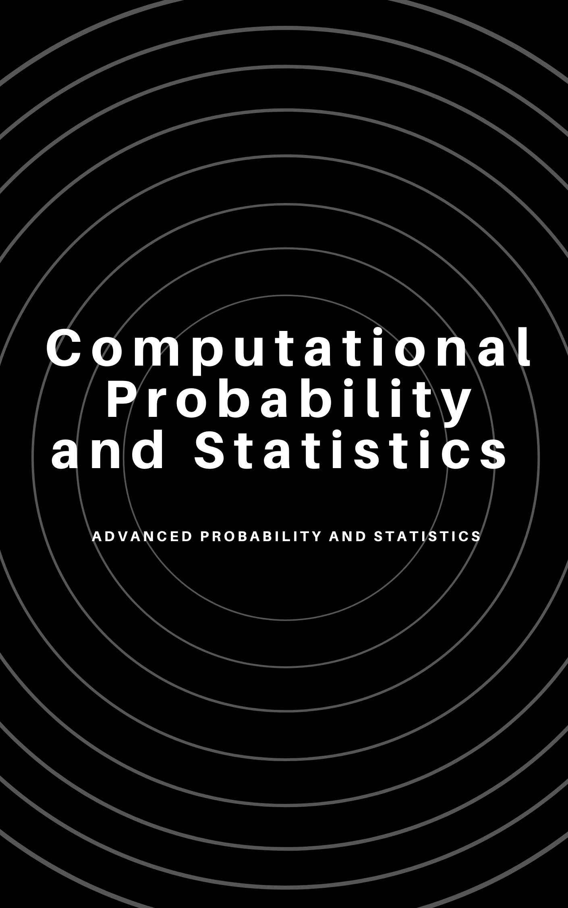

Computational Probability and Statistics
2021-02-04
Preface

This book is based on the notes we created for our students as part of a one semester course on probability and statistics. We developed these notes from three primary resources. The most important is the Openintro Introductory Statistics with Randomization and Simulation (Diez, Barr, and Çetinkaya-Rundel 2014) book. In parts we have used their notes and homework problems. However, in most cases we have altered their work to fit our needs. The second most important book for our work is Introductory to Probability and Statistics with R (Kerns 2010). Finally, we have used some examples, code, and ideas from the first addition of Prium’s book Foundations and Applications of Statistics: An Introduction Using R (Pruim 2011).
0.1 Who is this book for?
We designed this book for study of statistics that maximizes computational ideas while minimizing algebraic symbol manipulation. Although we do discuss traditional small sample normal based inference and some of the classical probability distributions, we rely heavily on ideas such as simulation, permutations, and bootstrap. This means that students with a background in differential and integral calculus will be successful with this book. The book makes extensive using of the R programming language. In particular we focus both on the tidyverse and mosaic packages. We include a significant amount of code in our notes and frequently demonstrate multiple ways of completing a task. We have used this book for juniors and sophomores.
0.2 Book Structure and How to Use It
The book is divided into 4 parts. Each part starts with a case study that introduces many of the main ideas of each part. Each chapter is designed to be a standalone 50 minute lesson. Within each lesson, we give exercises that can be worked in class and we have learning objectives. This assumes students have access to R. Finally, we keep the number of homework problems to a reasonable level and assign all problems.
The four parts are:
Descriptive Statistical Modeling: This part introduces the student to data collection methods, summary statistics, visual summaries, and exploratory data analysis.
Probability: We discuss the foundation ideas of probability, counting methods, and common distributions. We use both calculus and simulation to find moments and probabilities. We introduce basic ideas of multivariate probability. We include method of moments and maximum likelihood estimators.
Statistical Inference: We discuss many of the basic inference ideas found in a traditional introductory statistics class but we add ideas of bootstrap and permutation methods.
Statistical Prediction: The final part introduces prediction methods mainly in the form of linear regression. This part does also include inference for regression.
The learning outcomes for this course are to use computational and mathematical statistical/probabilistic concepts for:
- Developing probabilistic models
- Developing statistical models for inference and description
- Advancing practical and theoretical analytic experience and skills
0.3 Prerequisites
To take this course, students are expected to have completed calculus up through and including integral calculus. We do have multivariate ideas in the course but they are easily taught and don’t require calculus III. We don’t assume the students have any programming experience and thus we include a great deal of code. We have supplemented the course with Data Camp courses. We have also used Rstudio Cloud to help students get started without the burden of loading and maintaining software.
0.4 Packages
These notes make use of the following packages in R knitr (Xie 2020b), rmarkdown (Allaire et al. 2020), mosaic (Pruim, Kaplan, and Horton 2020), mosaicCalc (Kaplan, Pruim, and Horton 2020), tidyverse (Wickham 2019), ISLR (James et al. 2017), vcd (Meyer, Zeileis, and Hornik 2020), ggplot2 (Wickham et al. 2020), MASS (Ripley 2019), openintro (Çetinkaya-Rundel et al. 2020), broom (Robinson, Hayes, and Couch 2020), kableExtra (Zhu 2020), DT (Xie, Cheng, and Tan 2020).
0.5 Acknowledgements
We have been lucky to have numerous open sources to help facilitate this work.
This book was written using the bookdown package (Xie 2020a).

This book is licensed under the Creative Commons Attribution-NonCommercial-ShareAlike 4.0 International License.
References
Allaire, JJ, Yihui Xie, Jonathan McPherson, Javier Luraschi, Kevin Ushey, Aron Atkins, Hadley Wickham, Joe Cheng, Winston Chang, and Richard Iannone. 2020. Rmarkdown: Dynamic Documents for R. https://CRAN.R-project.org/package=rmarkdown.
Çetinkaya-Rundel, Mine, David Diez, Andrew Bray, Albert Kim, Ben Baumer, Chester Ismay, and Christopher Barr. 2020. Openintro: Data Sets and Supplemental Functions from ’Openintro’ Textbooks and Labs. https://CRAN.R-project.org/package=openintro.
Diez, David, Christopher Barr, and Mine Çetinkaya-Rundel. 2014. Introductory Statistics with Randomization and Simulation. 1st ed. Openintro. https://www.openintro.org/book/isrs/.
James, Gareth, Daniela Witten, Trevor Hastie, and Rob Tibshirani. 2017. ISLR: Data for an Introduction to Statistical Learning with Applications in R. https://CRAN.R-project.org/package=ISLR.
Kaplan, Daniel T., Randall Pruim, and Nicholas J. Horton. 2020. MosaicCalc: Function-Based Numerical and Symbolic Differentiation and Antidifferentiation. https://CRAN.R-project.org/package=mosaicCalc.
Kerns, Jay. 2010. Introductory to Probability and Statistics with R. 1st ed. http://ipsur.r-forge.r-project.org/book/download/IPSUR.pdf.
Meyer, David, Achim Zeileis, and Kurt Hornik. 2020. Vcd: Visualizing Categorical Data. https://CRAN.R-project.org/package=vcd.
Pruim, Randall J. 2011. Foundations and Applications of Statistics: An Introduction Using R. Vol. 13. American Mathematical Soc.
Pruim, Randall, Daniel T. Kaplan, and Nicholas J. Horton. 2020. Mosaic: Project Mosaic Statistics and Mathematics Teaching Utilities. https://CRAN.R-project.org/package=mosaic.
Ripley, Brian. 2019. MASS: Support Functions and Datasets for Venables and Ripley’s Mass. https://CRAN.R-project.org/package=MASS.
Robinson, David, Alex Hayes, and Simon Couch. 2020. Broom: Convert Statistical Objects into Tidy Tibbles. https://CRAN.R-project.org/package=broom.
Wickham, Hadley. 2019. Tidyverse: Easily Install and Load the ’Tidyverse’. https://CRAN.R-project.org/package=tidyverse.
Wickham, Hadley, Winston Chang, Lionel Henry, Thomas Lin Pedersen, Kohske Takahashi, Claus Wilke, Kara Woo, Hiroaki Yutani, and Dewey Dunnington. 2020. Ggplot2: Create Elegant Data Visualisations Using the Grammar of Graphics. https://CRAN.R-project.org/package=ggplot2.
Xie, Yihui. 2020a. Bookdown: Authoring Books and Technical Documents with R Markdown. https://CRAN.R-project.org/package=bookdown.
Xie, Yihui. 2020b. Knitr: A General-Purpose Package for Dynamic Report Generation in R. https://CRAN.R-project.org/package=knitr.
Xie, Yihui, Joe Cheng, and Xianying Tan. 2020. DT: A Wrapper of the Javascript Library ’Datatables’. https://CRAN.R-project.org/package=DT.
Zhu, Hao. 2020. KableExtra: Construct Complex Table with ’Kable’ and Pipe Syntax. https://CRAN.R-project.org/package=kableExtra.